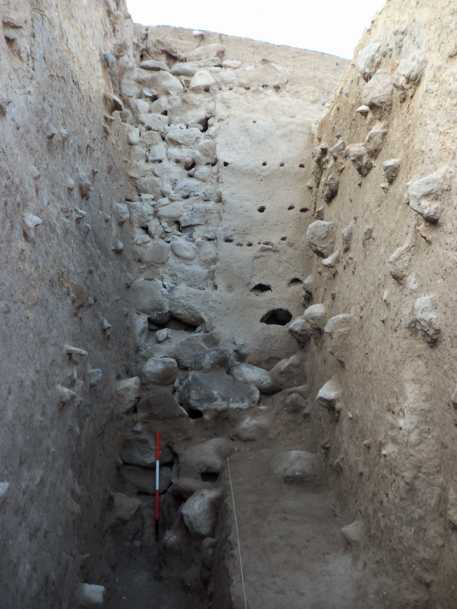
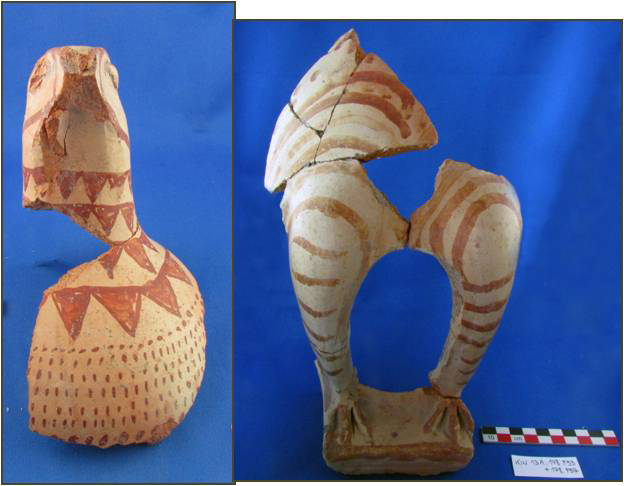
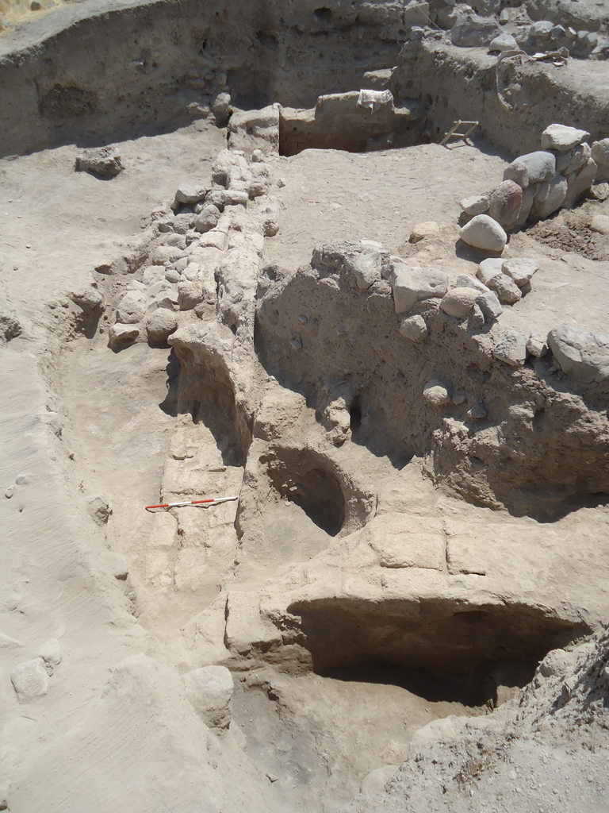
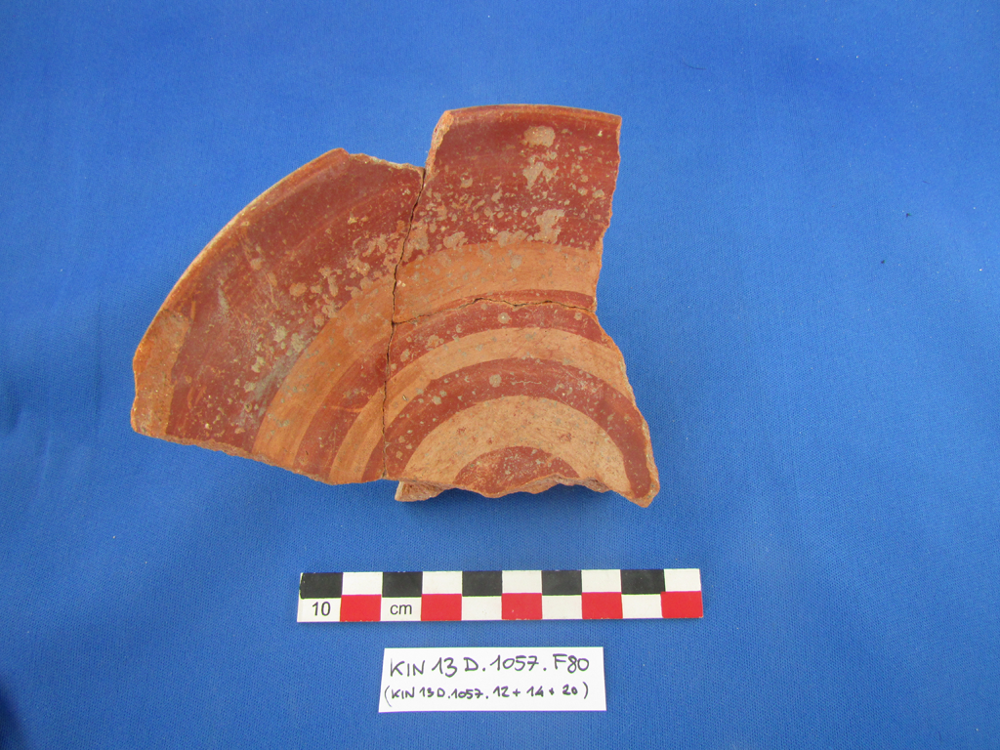
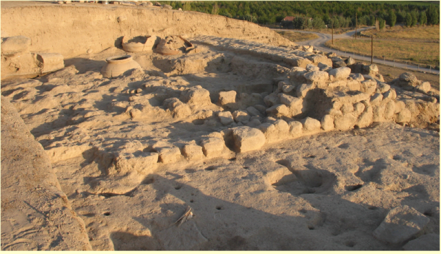
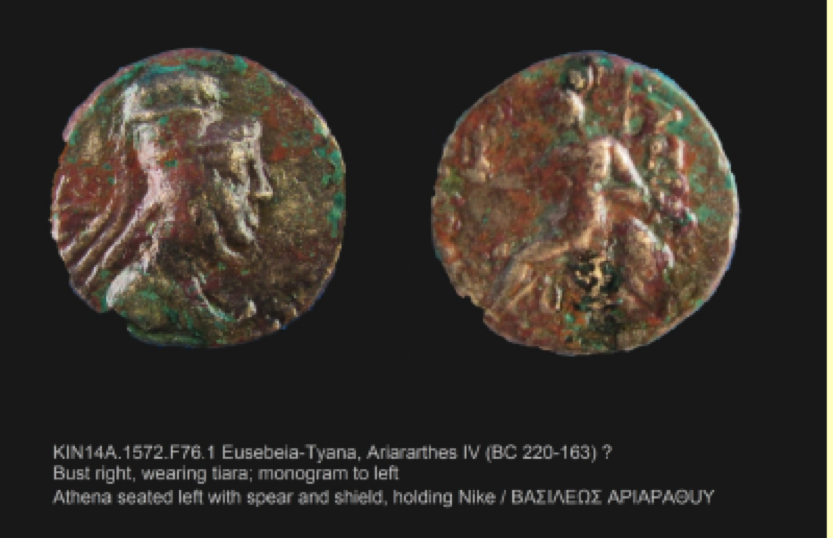

2011

The Citadel Wall in 2011
The first campaign of excavations at Kınık Höyük lasted from August
to October 2011. Three operations were opened, labeled A, B and C,
following the results of the
geophysical survey performed in 2010. In particular,
Operations A and C investigated the citadel walls, on the northern
and south-western slopes of the mound respectively, while Operation B
was opened on the top of the mound, aiming to investigate extensively
the large stone structure indicated by the GPR.
In 2011, Operation B consisted of three squares of 10x10 meters,
forming a rectangle oriented north-south measuring 300m 2
in total. The 2011 excavation campaign uncovered two levels,
characterized by stone architecture dating to the Medieval Period.
The first level is represented by one room found on the eastern edge
of the central square. Few materials were found in the soil
accumulations associated with this room though, and because the soil
is so close to the surface, its precise dating is speculative.
The second level consists of remains of domestic architecture and an
open working area. The architecture is constructed of two-row walls,
which are 70-90 cm. thick and preserved for a height of about 50 cm.
They are quite irregular, and use unshaped stones without any use of
binders. In the northern square, the stone walls defining two rooms
of a building are easily discernible; the eastern room with a surface
of nine square meters has been entirely excavated until we reached a
hard clay floor. In the northern part of the eastern wall a
well-preserved doorway opened toward an alley oriented north-south,
dividing this building from another one. In this alley beside the
doorway a tandır associated with the building was found. Here and
elsewhere several modern pits cut the architecture: these
occasionally caused difficulties in the collection of homogeneous
assemblages of materials. The central and southern sector of
Operation B is characterized by retaining walls and installations,
whose functions are difficult to understand. Ceramics found in this
level can be dated to the Medieval Period. The dating is supported by
the comparison with the excavations of the medieval levels at nearby
excavations of Tyana Kemerhisar, and we owe this information to a
strong cooperation between the two missions. However, assemblages are
rarely homogeneous and Hellenistic sherds are found in most of
Operation B’s stratigraphic units. In addition to the operation on
the top of the mound, two operations, labeled A and C, were opened on
the slopes of the mound.
Operation A occupies the northern side just above the edge of a huge
pit used in modern times as a stone quarry for building materials.
Since the geomagnetic survey did not show the presence of citadel
walls in this area, we assumed that they had been removed while
digging in the quarry. Thus our goal in this operation was to obtain
a stratigraphic window into the earliest levels of the mound. After
removing the topsoil, we reached an accumulation of repositioned
mud-bricks. Here, a pit was cut in order to accommodate a small jar
containing a necklace made of glass beads of different colors, sizes
and shapes. The glass beads are all rod-shaped and decorated with
colored applique bands or pellets. Apart from some eye beads, whose
production is already well attested in the second millennium BC, most
of them find good parallels in productions ranging from the Middle
Iron Age down to the first century BC.
Under the thick accumulation of repositioned mud-bricks, we found a
stone masonry belonging to the citadel’s fortification wall. This
massive east-west structure is over four meters wide. Upon this
discovery our strategy changed, and a two-meter wide sounding
perpendicular to the outer face of the citadel wall was opened in
order to investigate the slope’s stratigraphy.
At the end of the campaign more than five meters of the outer face of
the wall were exposed, and the foundations of the walls were not yet
reached. Two main phases of this wall were identified. The later
phase is built with the “Schalenmauer” technique: inner and outer
faces are made of larger unshaped stones, whereas the stones in the
center of the wall are smaller, rarely exceeding a diameter of about
thirty to thirty-five centimeters. A clay mortar was used to
stabilize the structure.
On the outer face of the wall a ten-centimeter thick layer of mud
plastering with vegetal inclusions was preserved. The adherence of
this coating to the stone face of the walls was possibly implemented
by small wooden logs, organized in six irregular horizontal rows.
These wooden elements would have protruded from the wall’s surface in
the plastering. This reconstruction is based on the presence of wood
remnants inside the holes, which are still preserved in the plaster.
Similar wall plastering has been detected elsewhere in fortification
walls of pre-classical Anatolia, but the example from Kınık Höyük is
noteworthy, because of its exceptional state of preservation. About
three meters below the top of the wall there is a slanting clay
rampart associated with the wall plaster, under which two more meters
of stone masonry, representing the earlier phase of the wall, were
exposed. These rows, however, are constructed from slightly smoothed
blocks with diameters of about 50-60 centimeters, and are not covered
by plastering. The profile shows that an edge of this earlier phase
projects for about 1.30 meters beyond the wall face of the later
phase. The eastern face of a second north-south wall was exposed in
the western section of the sounding. This wall works with the earlier
phase of the citadel walls, and shares its characteristic large
dimensions and working of the face blocks.
The citadel walls were also investigated in operation C, on the
southwestern slope of the mound. In order to keep the walls in the
best state of preservation, in view of its stabilization, four
soundings were opened instead of one extensive excavation area. In
each sounding a similar situation emerged: uphill levels, which abut
or work with the inner face of the citadel stone walls; the citadel
walls, covering the central part of the soundings; and finally, the
downhill levels, which abut on the outer face of the wall. The wall’s
building technique and dimensions are the same as those of the walls
excavated in operation A, and the dimensions and the smoothing of the
blocks on the outer face possibly indicate that they belong to the
earlier phase attested in A. Since the downhill levels were
investigated in operation A, investigations in C were mainly
concentrated on the uphill levels in order to understand the
relationship between the wall and the stratigraphy of the inner
citadel. Uphill stratigraphy in all of the soundings presents a
series of one to three clay floors, often associated with mud-brick
or stone architectural remains. The ceramic repertoire of the
different floors is quite homogenous and can be primarily dated to
the Middle to Late Iron Age. The finest piece of pottery found in
Operation C is a fragment of a carinated cup with an applied deer
motif. The decorative technique used on this sherd is unusual: it is
not the normal painted ware, but figures were shaped, moulded or even
possibly cut out, applied to the cup and then painted. The deer motif
represented in a clear silhouette style is strongly reminiscent of
the silhouette deer iconography on the Alishar IV production, well
known from many sites of Central Anatolia.
In sounding 3 a thick layer of collapsed mudbrick was partially
covering the upper section of the citadel wall and collapsed inward.
The context indicates that these mudbricks constituted the
superstructure of the walls. Since the mud-brick debris was sealed by
three floors with Iron Age sherds in situ, a dating of the walls
phase excavated in operation C before the Middle to Late Iron Age is
assured. The dating of the walls in Operation A is still up for
debate, but seems to match the results achieved in C. Though using
different materials, the parallels drawn with the walls of the
neighboring sites of Porsuk and Alishar could offer further
information for dating the later phases- in the least for the Middle
Iron age.
2012
The second excavation season at Kınık Höyük lasted from June to
August 2012. Works focused on two Operations, A and B, in both cases
extending the excavation of 2011. During the 2011 season, in Op. A we
had exposed the monumental citadel walls. In 2012 the excavation area
was enlarged in two directions, west and south. Towards the west
(Area A1), the aim was to expose the continuation of the citadel
wall, while the enlargement towards the south intended to investigate
the inner structures of the citadel (Area A2), clarifying their
stratigraphic and planimetric relationships with the wall.
In area A1, under the topsoil, we unearthed a series of 4 levels, all
dating to the Late Iron Age. The first level is characterized by a
production area, used in two phases. The first phase comprised a
floor pierced by a series of pits, of which two contained ashes and
other traces of burnt material. A small olla for cooking, perfectly
preserved, was unearthed in this phase, together with various ceramic
and glass slags. Underneath this phase, the second phase comprised a
clay floor, associated with a series of pits and a small
half-interred mud brick oven. A complete red burnished plate was
found within the oven.
The second Late Iron Age level (Level 2) comprised a small stone wall
running E-W abutted by a lamination of several clay floors, many
patched by ash spots. This level is well preserved only in the
north-eastern sector of the excavated area, while to the south-west
it is badly eroded and cut by the Level 1 pits.
Underneath Level 2, a series of several other floors, apparently not
associated with any structure, represented another level (Level 3).
Significantly, from these floors and the above lying accumulations we
recovered a rich assemblage of ceramic sherds, among which there were
also fragments of a pitcher with a painted polychrome flower.
The fourth Late Iron Age level (Level 4) was characterized by well
constructed architecture. This comprised a mud brick wall with stone
socle running N-S, perpendicularly to the citadel wall. To the north
it formed a corner with another mud brick wall running E, breaking up
after ca. 1 m, perhaps in connection to a sort of passage or doorway
for the building. Both the N-S and the W-E wall were plastered, maybe
even painted as traces on the former seemed to reveal. The room
defined by the two walls was not excavated, but we completely exposed
the mud-brick debris sealing it. To the south the room was defined by
a second W-E. Here the area was quite disturbed by pits dug from the
levels above, but it has been possible to expose a third W-E wall. It
probably defined another room, the western sector of which preserved
a well-made floor, paved with large stones. Area A1 is the western
extension the 2011 excavations in Operation A, where the imposing
structure of the citadel wall was exposed for 4.5 m in width and 6m
in height. On the northern facade of the wall, the sole face exposed
thus far, we found a perfectly preserved 10 cm thick layer of
plaster. In 2012 we opened a 12x10 m excavation area following
westwards the orientation of the wall. At the end of the works in the
area, we discovered that, after it fell into disuse, the citadel wall
was heavily plundered along its whole thickness, in order to obtain
building materials ready for other structures. Only the southern
limit of the wall remained untouched by looting activities. Just
above these meager remains of the citadel wall ran a mud brick wall
with stone socle, joining with the Level 4 structures that emerged in
the Area A 2. This wall defined a space occupied by a paved floor, a
wide hearth and a couple of large interred pithoi. A third pithos,
provided with lid, was lying on another paved floor pertaining to a
second space of the same structure.
The last two phases investigated in Area A1 lie in the western
sector. Both are domestic contexts, very badly preserved because of
their proximity to the topsoil. In the north-western corner the
remains of a plastered floor are associated with an E-W mud brick
wall. To the north of these remains, two interconnected walls have
been unearthed, one of which is leaning above the filling of the
citadel wall spoil trench filling.
Operation B, located on the top of the mound, was also enlarged in
two directions. A first enlargement to the north-west, (Area B2)
aimed to extensively investigate the stone architecture that emerged
during the 2011 season. In particular we brought to light a new room
of the building exposed in 2011, together with a hall shaped as an
"8" lying to the south, found completely filled with stone debris.
Investigations on the floor sequence and their relations to the walls
finally allowed us to understand the different phases of structure
function. Already during the 2011 campaign we had noticed the
presence of both medieval and Hellenistic materials in the
accumulations above the floors of this architecture. Thanks to our
2012 work it is now clear that the structures extending to the north
of Op. B represent different phases of manipulation of a Hellenistic
building (Level 3), whose remains have been apparently reused also
during the Medieval Period (Levels 1-2). Some medieval installations
seem to have served for feeding and watering animals and seem to
reveal the rural nature of the settlement during that period. The
medieval masonry directly leans on coeval floors, without contacts to
the preceding floors, associated with the original Hellenistic
edition of the structure.
Area B1 is the southern elongation of the 2011 excavation area in
Operation B. In the northern sector of the area a series of medieval
layers have been brought to light, directly associated with the
northern levels. The uppermost level (Level 1) comprised a circular
stone structure with a diameter of 5m ca., recalling the typical
structures or fences nowadays used by local herdsmen. The
architecture found in the level underneath (Level 2) was quite poor,
comprising a house provided with very small rooms, barely preserved
clay floors and defined by single-lined stone walls. Outside this
house, we found three broken storage jars, reused as trash bins or
ovens.
All traces of medieval occupation disappear in the levels below
(Level 3-4), giving way to badly eroded levels, disturbed by
activities of the preceding phases. Here the poor remains of a mud
brick wall have been found, whose relationships with other exposed
structures are very difficult to establish. The associated floors are
also poorly preserved and extant only in small portions. Judging from
stratigraphical sequence and ceramic findings, Levels 3 and 4 are to
be dated to the Hellenistic period. Below these levels, the
excavation was stopped after exposing the top of a large mud brick
wall running NW-SE, likely dating to the Iron Age. Significantly,
this mud brick wall runs parallel to a 1.50 m thick stone wall
uncovered immediately below the topsoil along the southern edge of
Area B1. However, this latter wall lies at a much higher elevation
then the mud brick wall, but it is cut by Hellenistic pits, leaving
the dating to the Iron Age as a possibility.
2013
The 2013 excavation season, lasting from June to August, has
especially concerned the levels of Period III, dating to the
Achaemenid occupation of the site. Besides continuing the work
started in 2011 in the Operations A and B, in 2013 a new operation
(Operation D) was opened in the lower terrace of the site, along its
western borders. The joint investigation in the Operations A, B and D
unexpectedly revealed the relevance the site must have had during the
Achemenid period. In addition to the excavation, the first restoration and
preservation works were carried out, focusing on the citadel
wall exposed in Op. A during the 2011 and 2012 campaigns.

Bird Figurines from Op A1
In the Area A1 of Operation A investigations have extended westwards.
The first level excavated in this area (Level A1.1) was lacking major
structures but, judging from the findings, including a small hoard of
13 bronze coins, can be dated to the Hellenistic period. Below the
Hellenistic level, we found a series of floors in relationship with
two badly preserved walls, forming the north-eastern corner of a
small space. The materials recovered from the floors and the
accumulations in between allow us to date their disposal to the
Achaemenid period, between the 6th and 4th century BC. The findings
in these levels of Area A1 are extraordinary in terms of both quality
and quantity. In fact, in addition to fine ceramic sherds, many of
which display painted decorations, we found a large amount of
terracottas, many zoomorphic and one anthropomorphic, representing a
female figure. Added to a fragment of architectural decoration, these
findings let us hypothesize that the levels constituted part of a
worship area of very high importance.
In the Area A2 of Operation A (squares 17.14-17.19-17.13-17.18), a
first level dating to the Hellenistic period (Level A2.1) has been
found, below which four levels dating to the Late Iron Age have been
excavated (A2.2-5). The first among these latter levels bore elements
of a workshop area, equipped with a furnace, half interred ovens,
working surfaces and rubbish pits with slags of various materials.
During the 2013 campaign we continued to expose the imposing E-W mud
brick wall unearthed in 2012, possibly dating to the 7th century.
Thus, works revealed this wall to be 13 m long, straddling squares
17.13 and 17.18.

Achaemenid Room Starting to Appear in Op. B
Work in Operation B focused on its central area. Here, we first
investigated the medieval and Hellenistic levels (Levels B.1-4),
already partially exposed in 2011 and 2012. These levels,
particularly those dating to the Medieval Period (Levels B.1-2), were
characterized by a series of pits, several large (reaching 3 m in
diameter), cutting the preceding levels of occupation. This pitting
heavily hindered the possibility to fully understand stratigraphical
relationships between the different levels. The south-western sector
of Operation B was better preserved compared to the central sector.
In particular, we brought to light stone structures and floors
associated with a Hellenistic house reused and modified in the
Medieval Period. The southern half of square 16.16 was entirely
occupied by structures of a monumental building, whose main element
was a massive 1m thick and 10m long mud brick wall. This wall,
oriented SE-NW, formed at its eastern ending a corner with a NW-SE
wall, preserving traces of a white plastering. In this corner we
opened a deep sounding that, while not yet reaching the original
floor of the room, revealed the walls to be preserved for the
extraordinary elevation of more than 2m. The deep sounding, moreover,
reached several intermediate floor levels, indicating multiple stages
of reutilization of the large structure after its first installation
(Levels B.5-7). The accumulations and the debris leaning against the
wall and filling the large room produced ceramic materials dating to
the Achaemenid period. Moreover, in the bottom of the sounding a
circular mud brick installation forming a quarter of circle joined to
the two perpendicular walls has been found. In the filling of this
installation, probably a trash bin, two complete ceramic bowls have
been found, both pertaining to a Late Iron Age horizon.

Red-Banded Pottery from Op. D
The new Operation opened in 2013 (Operation D) occupies the western
limit of the lower terrace of Kınık Höyük (square 1.15). The latest
level delineated here, lying a few centimeters below the topsoil, was
heavily disturbed and dates to the Medieval Period. This level (Level
D.1) displayed very different features from those of the medieval
settlement in Operation B, and some findings suggest an earlier
dating to the Byzantine period. If confirmed, this hypothesis would
attest the presence at Kınık of a Byzantine settlement limited to the
lower town and not involving the mound itself. In the north-eastern
corner of Operation D, we found a small space, demarcated by stone
walls. It is likely attributable to a Hellenistic level (Level D.2),
judging from the materials produced by the fillings. Investigations
south-west of this room suggest that it could have been associated to
some craft production activities. Below the Hellenistic level we
unearthed a small space (Level D.3), defined by two mud brick walls
and a small stone wall, maybe pertaining to an earlier phase. Judging
from the hardness of the mud bricks, possibly produced as an effect
of burning, the presence of many ash accumulations and the recovery
of oven remains, this was an industrial area, maybe for the
processing of foodstuffs or even of metals, as apparently suggested
by some slags retrieved in the surroundings. Ceramic materials,
including a fragment of a painted lekythos, provide a dating of Level
D.3 to the Achemenid period.
In 2013 the restoration work for the outer facade of the citadel wall
has started. Functional to the restoration work, we carried out
archaeological excavation in the area, which brought to light the
construction phase of the wall itself, corresponding to the most
ancient level so far reached at Kınık (Level A.8). Moreover, the
excavation to better expose the facade led to the reconnaissance of a
rampart, covering the most ancient construction phase of the wall and
associated to the most recent one.
2014
The 2014 season, lasting from mid-July to early September, continued to produce new and exciting results for the seven levels of occupation already identified at Kınık Höyük during the previous three campaigns. The 2014 excavation comprised three areas of operation. Operation A on the northwestern slope of the mound included sector A1 in the southwest, sector A2 in the southeast and sector A-Walls in the deposits north of the citadel walls. Operation B continued excavation at the top of the mound and Operation D continued excavation on the terrace in the western sector of the lower town.

Operation A1
In sector A1 the excavation was extended toward the south (S17.3) in order to further investigate the Levels A1.1-2, which represent the Hellenistic and Achaemenid Period occupations that were first uncovered in 2013. Level A1.1 consists of a terraced platform defined to the north by a mudbrick wall A104 and to the east by a stone wall A126. The terrace likely represented a court with a storage function, with at least three phases of use. Five big pithoi were placed into the soil of the court. East of the stone wall a space defined by a floor may have functioned as a partially roofed room as indicated by its many postholes and a central fireplace. This space also included a bench or chest constructed of stones and filled with earth and a hoard of 17 bronze coins which were sealed from above with mudbricks. They most likely belong to the same hoard as thirteen coins discovered in 2013. The area around the bench yielded two more hoards under the floor, and sparse coins for a total of 189. Readable coins date to the late 2nd – early 1st century BCE. On the floor below, belonging to Level A1.2, a red painted base of a terracotta statuette was found: its production technique, fabric and decoration are compatible with the two bases of zoomorphic vessels found in 2013 likely dating to the Late Achaemenid Period.
Operation A2
Work in Sector A2 continued to investigate the buildings associated with Level A2.3, the LIA I (Period IV; 7th-6th c. BCE) that were uncovered in the previous two campaigns. Our excavation extended southward (S17.18) and removed floor A282, revealing its preparation layers below and another floor A1215 which could also be dated to the LIA I due to the well preserved collection of ceramics found in the ashy layer just above the floor. This floor, also associated with mudbrick walls A234 and A300, defines a large court (Room 1) that represented an earlier phase A2.4b. The northern wall of the court was constructed against the internal red-painted plastering of the citadel walls and was coated with many layers of fine, white-painted plaster, traces of which were also identified on the western wall A234. The walls delimitating the court show multiple phases of construction, possibly due to earthquakes or the instability of the area. The court was accessed from a large passageway on the southwestern corner that preserved part of a nicely smoothed, regularly set basalt stone pavement. Three floors in the court were exposed, all with very few materials, dating to the LIA I and MIA. The discovery of fragments of at least three pithoi on the floor A1222 = A1245 suggests that the court played a part in storage for this building.
Operation A-Walls
In 2014 we exposed five more meters of the citadel walls in S17.19, east of the section exposed during the previous three campaigns. Three rows of a mudbrick superstructure were revealed at the easternmost edge of this section once again indicating the excellent preservation of this monument. Furthermore, we were able to excavate and date the seven levels of outer archaeological deposits abutting the walls on the northern slope of the mound (A.1-7). Level A.3 is most likely the latest level in which the walls were still in use and dates to the LIA II/Achaemenid Period from initial potter analysis. A 30 cm channel, possibly representing the remains of a drainage system, ran along the outer face of the walls during this period. The level below, A.4, used a different type of drainage system consisting of yellow permeable earth brought to the settlement. Level A.5 included an interesting feature made from mud and stones formed a 1 m thick installation which was covered by a 1.5 thick accumulation rich with bones and ceramics dating to the MIA. Level A.6 dates to the EIA and the accumulations here may represent trash deposits moved here to help protect the stone socle of the walls from outside attack and provide stabilization to the walls which were in need of repair already during this period. Finally, A.7 is the level in which the walls were constructed. C14 analysis of timber used in the outer face of the stone socle provides a date of 1400+/-50 BCE and the ceramics in the rampart accumulation A161 provide a date of the LBA-EIA. To the north, an earlier phase of construction was uncovered. A stone rectangular foundation with traces of a mudbrick superstructure jutted out from the walls and may belong to a tower. This level is not yet dateable.
Operation B
The main aim of the 2014 season was to further investigate the Achaemenid Period mudbrick building which witnessed several phases (Levels B5-7). Mudbrick walls B397 and B673, first exposed in 2013, are common features for all three levels. These walls are particularly well preserved, ca. 2 m high and 1 m wide, with some spots displaying a robust colored plastering. The latest phase of this structure, is also defined by two additional walls (B815 and B892), which join with B397 and B673 to form a large trapezoidal room measuring ca. 10 m by 3-4 m (Room 7). Below, in Level B6, the main architectural feature of this room is the wall B897. This wall, comprising a stone socle and mudbrick superstructure, runs NW-SE just below the later wall B892 and is coated by a thick layer of plaster. The earliest floor of Level B.6 (phase b), was provided with an oven (B2001), equipped with a lateral stone installation. Toward the north-western corner of the room the bottom of a mill was found upside down on the floor. The presence of a mill, oven, and several ashy fireplaces indicate that this space was associated with food preparation during Level B6. Level B7 is currently exposed only in the eastern half of Room 7 and will be investigated in 2015.
Operation D
In 2014, we continued to excavate in several areas of S1.15 in order to bring the entire area to a uniform level and to better articulate the changes between the Hellenistic Level D2 and Achaemenid Level D3 periods and to begin to investigate evidence for a LIA I (Period IV) occupation. The transitional phase between the Achaemenid and Hellinstic periods (Level D2.b) was preserved and investigated east of stone wall D1114 which defines a room (Room 2) first uncovered in 2013. Here we excavated a series of accumulations full of thick ash and charcoal fragments and poorly preserved floors. Similar to documented activity on the citadel, this phase indicates the burning and removal of previous floors in preparation of the floors and architecture associated with Level D2.a which definitively dates to the Hellenistic Period. We continued excavating east of Room 2 (Level D3.a) and revealed food production installations including large (D1161) and small (D1191) domed mudbrick ovens as well Olynthus type basalt mill, consisting of a hopper and lower curved grinding stone, (which is compatible with a 5th century BCE dating for Level D.3a. The Level D.3b directly below also corresponds to the Achaemenid Period. Excavation inside Room 2 revealed another food processing area and a deeper sounding below the Achaemenid floors in the southern portion of the room suggests we have reached a LIA I occupation.
Conservation
Conserving the citadel walls and protecting the site for future excavation and visitors is an important aspect of our project at Kınık Höyük. In 2014 we were able to confirm that the mortar-like material (natural volcanic binder and MAPEI mixed with soil and water) used to stabilize the masonry was a success. In order to further protect the walls, and most importantly, their well-preserved outer mud plastering, we began a roofing project to replace a previous temporary roof. A system of multiple roofs at different heights covering different contiguous areas of the excavation was conceived in order to be able to take apart single elements without disassembling the whole roofing system. In Operation B, the conservation team also took samples of the painted plaster from the Achaemenid building and another roof was constructed to protect this area of the site. Finally, the summer of 2014 witnessed the construction of temporary trails and the erection of information panels in Turkish, Italian and English which have already benefitted locals and visitors alike.
2015
The 2015 campaign at Kınık Höyük lasted the two months of June and July and saw the participation of 30 specialists and students (archaeologists, topographers, restorers, illustrators, geologists), and 24 workers. The main goals were: the investigation of the pre-classical levels of the sacred area of the citadel, in operation A, sector A1; the extensive excavation of the summit of the citadel to expose the plan of the well-preserved ‘yellow building’ (a building made of a yellowish mud-brick dating to the Achaemenid period); the investigation of a new portion of the citadel walls on the southern slopes of the mound; and the deep trench sounding of the occupational history of the lower town of the site.
The fifth year is a bench mark for all ventures, and even more for the project Kınık Höyük. It was the right time to start planning the publication of the first final report volume on the Hellenistic occupation on the site; therefore, a group of scholars participated in the excavation to plan this volume and start analyzing the materials for the scope. Maria Elena Gorrini (Ass. Prof. of Classical Archaeology, Pavia University), worked in our new storehouse on the collection of terracotta figurines, finding growing evidence of the import of some of them from Tarsus, in Cilicia. Together with Maria Elena, ISAW PhD student Irene Soto started to work on the ceramic typology of the Hellenistic period; this is an important step, since it will be the first such a work for the entire Hellenistic kingdom of Cappadocia. For a week, Kathryn Morgan (PhD student, UPenn) joined the mission to study the rich collection of textile production tools from the citadel and the lower town of Kınık. Through the work of these three experts, and the contribution of the field directors, the character of the Hellenistic town hidden under the surface of Kınık Höyük became every day more tangible.
The emphasis on the Hellenistic period dictated the strategy for the excavations in Operation B on the summit of the mound. This year we continued to excavate the rests of the small private houses of Level B4, built on top of an artificial terrace. The terrace was obtained by cutting the wall remains of the imposing building of the earlier level B5-7 and filling the empty rooms mainly with trash layers of ashes and various organic and ceramic remains. In a niche on a wall of one of the Hellenistic mud-brick rooms, we found a large vessel, possibly connected with wine drinking in ritual context. At the end of the campaign, the results of the excavations provided a novel and quite unusual spatial organization of the citadel during the 3rd-early 1st c. BCE. In this period, the top of the mound was likely encircled by a 1m thick defensive wall; houses and other buildings developed along this wall, while the concave core of the citadel was almost empty and eventually used as a large dumping area. Since so little is known about the plan of the town centers in Central Anatolia during the Hellenistic period, and classical authors claimed that even with a large number of inhabitants most of them could not be named poleis, this discovery provides us with the first new evidence about how these Anatolian Hellenistic towns were structured.
The investigation of the pre-classical occupation is central to the research at Kınık Höyük. The landscape monuments of the “forgotten kingdom” of Tuwana, a Neo-Hittite polity archaeologically still unexplored, date to this period. Excavation of the pre-classical levels continued on the southern slope of the mound and in the lower town. While Nancy Highcock and Erkan Akbulut (resp. PhD and MA student, ANEES-NYU) uncovered several phases of use of private dwelling with facilities for the production and process of food, but also fine ceramics, and eventually reached the levels dating to the 7th-6th century BCE (KH-Period IV), Dr. Anna Lanaro (affiliated researcher, ISAW-NYU), Lorenzo Castellano (PhD student, ISAW-NYU), Marco De Pietri (Pavia University), and Phillip Strosahl (ANEESNYU) reopened operation C, investigating the citadel walls. Mr. Castellano excavated a small sounding trench inside walls, attempting to reach and explore the Bronze Age occupation in the citadel. The structure he found, the western wall of a huge pit coated with vegetal, possibly straw remains, came as a surprise, reminiscent of the huge underground siloi of the Hittite sites, like those uncovered at Sarissa Kuşaklı.
The team led by Dr. Lanaro was asked to investigate extensively the citadel walls on the southern slopes of the mound, after a 30m-long portion of this wall had been exposed on the northern slopes during the first four campaigns. Our aim was to check the technique, the state of preservation, and the dating of the walls in this area of the site. Dr. Lanaro and her team were able to expose some 40m of the stone socle of the perfectly preserved citadel fortification, as well as an imposing 6 x 6 meter tower protruding from the walls. A trench cut into the wall’s masonry showed that this portion of the wall was not executed with the same technique as the one exposed to the north and that reparations and adjustments were multiple, both on its inner and outer faces. One of these phases had a post quem dating provided by the finding of beautiful “Alışar IV ceramic” fragments with the typical deer represented in a silhouette style. The presence of this excellent production is one more clue about the importance of the site in the early first millennium BCE.
The state of preservation of these portions of the walls is another exception for pre-classical Anatolia, such that our aim is to prepare them for restoration and opening to the public. For this mission, two restorers from the faculty of engineering at Pavia University joined our team and created new experimental movable roofs which will serve as provisional covering for the excavation areas. The roofs are designed to have a low impact in terms of weight (thus the use of wood and tin) and to be quickly assembled and removed in modules. Besides the roofing, restorers also tested new stabilization materials on the mudbrick and the mud plastering unearthed on the citadel.
The ancient landscape around the site and the environmental change in the past 10,000 years are also an important part of our research agenda. This year, in cooperation with a team of geologists from CNRS, France, and the University of Niğde, we facilitated and analyzed the results of the coring in different spots of the Plain of Bor. Our primary result was the discovery of an ancient lake and marshy area in the first half of the 2nd millennium BCE. Previous investigations in the neighboring Konya plain found that the whole Southern Anatolian Plateau was a unique lake basin during the Pleistocene, but that no later extensive water areas ever existed. The presence of a lake in the center of the Bor Plain provides a completely new interpretation of the settlement pattern in the region and hints at the importance of the site as an obligate passage between the mountains and the lakeshore. One of this is Kınık Höyük.

Operation A1, Sacred Area: Sanctuary of the Hellenistic Period (Level 1)
The excavations led by Andrea Trameri (PhD Student, ISAW-NYU) in the sacred area of sector A1 on the north-western edge of the citadel (S17.3-4-9.) reached the Achaemenid Level 2 in 2015. The aim of the campaign was to investigate the construction history of a storage platform with interred big pithoi, dated to the Hellenistic period, and to excavate a series of ashy deposits rich in animal bones located in a room belonging to Level 2. These deposits, interpreted as discard deposits from cultic activities, were rich in interesting materials, particularly zoomorphic vessels representing birds and terracotta animal figurines.
LEVEL 2. The Hellenistic storage terrace has been entirely excavated, exposing structures from the earlier Level (Lv. 2) that show a different function. In the Achaemenid period, 1 m wide walls with a stone socle and mud-brick superstructure were built on this area. To the north and the east, these walls were severely damaged due to later reconstructions or to the erosion along the mound slopes.
While the spaces to the south and north-west have not been excavated, a single room, partially exposed in the S-W corner of the excavation area, is defined to the east by a long mud brick wall (1687), preserved for an height of ca. 1.5 m. The wall was cut in Hellenistic time and obliterated by a stone wall with similar orientation used as the east limit of the later platform (see below). Also the north wall (1664) had been only partially preserved due to a cut possibly to install big storage vessels during the re-functionalization of the whole area in Level 1. A floor in phase with the walls yield painted sherds dating prior to the 2nd c. BCE (e.g. 1690.1), and the mixed material found in the deposits above the floor are also attributed to the same period.
North of the wall, a second room was uncovered and partially excavated. It is characterized, unlike the room to the south, by deposits with huge quantities of animal bones, ashes, burnt materials, and strongly sloping to the west. These layers were excavated ca. 1.5 m below the elevation of the Hellenistic terrace. The excavation confirms the nature of the deposits already defined in 2013, characterized by the following features: a large quantity of animal bones that palaeozoological investigations proved to be 2-4 years old sheep-goat, fragments of statuines, fragments of fine ceramic bowls, and fragments of several big zoomorphic vessels or terracotta figurines mainly representing birds and bulls (often red painted and polished). The latter are stylistically pre-Hellenistic, some possibly dating back to the Iron Age. Particularly noteworthy for 2015 was the finding of several terracotta figurines (at least 9, excluding minor fragments) representing bovines, especially bulls. Fragments of a splendid, very carefully polished ceramic rhyton representing a caprid (deer/ibex? F16) were found in the same context. The rhyton is likely dating to the Achaemenid period, and goes along with similar exemplars produced in metal. All these deposits likely indicate a later, secondary function of the whole northern room, used as a sort of favissa to deposit within the sacred area the remains of cultic activities performed in a sanctuary. Two 14C samples from the deposits give 95.4% 2 sigma ante quem calibrate dates resp. 391-209 BCE, and 360-157 BCE. It seems therefore likely that the final date of Level 2 in the sacred area lays somewhere between the end of the 4th and the 3rd c. BCE.
LEVEL 1. The Hellenistic period level is subdivided in five well-recognized phases. Initially, the southern room of Level 2 was filled and new floors were re-constructed (phase 1e-d) with a new storage platform, defined to the east by a new stone wall (126). The latter was built directly over the earlier mud brick structures. A low east-west oriented mud brick wall (1623) served as northern limit of the storage platform that served as part of the facilities of the Hellenistic sanctuary.
In these first phases, we suggest that also the area east of the stone wall was a lower storage platform with interred pithoi. No one single pithos was found there, but several circular pits found in 2014, all of the same dimensions, may correspond to the empty space once accommodating the pithoi. In later phases (phase 1c-b), the whole area was redefined by the further elevation of the platform west of the stone-wall 126, by a cut in the ashy accumulations deposits and the masonry of Level 2, and by the construction of a second mud brick wall (104), whose circular plans follows the mound shape. Together with the walls, new pithoi, perhaps systematically removed from the area to the east, were installed on the terrace. Over the eastern storage platform a room was built with a well-executed, circular fireplace in the center of the floor (1534). This room may be dated to the mid-2nd – mid-1st c. BCE, and may have served as an important space within the sanctuary, on the basis of having found rich bronze coin hoards (circa 200 coins), and other materials here in the 2014 campaign.

Operation A1, Sacred Area: Hellenistic Bronze Coin from Tyana.
During the 2015 campaign, the excavation of the accumulations and floors that constitute the terrace, produced a Late Hellenistic ceramic assemblage of very fine wares, not only of high quality local products but also of numerous imports (e.g. F14). The quantity of metal objects was also particularly rich, such as a fully-preserved copper or bronze ladle (F10), a short iron knife (F33), and two silver zoomorphic feet (possibly representing, once again, the paws of a bird of prey), belonging originally to an unidentified vessel, possibly a cista or a mensula. All these objects, as well as 40 coins of the hoards excavated in 2013 and 2014, were restored this year. After restoration it was possible to date the coins between the second half of the 2nd and the mid 1st century BCE. They came not only from the centers of the kingdom of Cappadocia, such as Eusebeya-Mazaka (Caesareia-Kayseri), Eusebeya-Tyana (today’s Kemerhisar, Niğde), but also from neighboring regions such as Ikonium (Konya), Tarsus, Aigiai (Cilicia), and far regions as the Seleucid kingdom.
2016
Excavations were organized in five operations. In Operation A1 the team continued the investigation of the cultic area. After completing the investigation of the Late Hellenistic sanctuary in 2015, the 2016 campaign brought to light four rooms belonging to the sanctuary of the previous occupation period (Achaemenid - early Hellenistic). A trench in room Ar3 exposed the eastern portion of the room, allowing for the excavation of two floors belonging to the sanctuary, as well as the fill between. From this room fill, two whole votive terracotta statuettes of bovids emerged, as well as and a stone statuette of a falcon displaying preserved black painted decoration. Additional finds such as censers and fine black and red-banded ceramics, indicate that the room Ar3 context of the sanctuary is particularly well preserved and promising for next year investigations.
In order to extend the investigation of the sacred area, a new Operation (E) has been opened south of Operation A1. The extension has allowed us to bring to light a stone-lined mud-brick wall with a width of ca 5 feet (1.5 m). The wall definitely belongs to the building of the Early Hellenistic sanctuary, identified in the adjacent Operation A1. To the east of the wall the presence of a medium-sized pebbles paving suggests the presence of a large courtyard.
The team also continued the investigations of the citadel with particular focus on its the southern region. Operation B has uncovered a small domestic quarter of the town dating to the early Hellenistic period, while in Operation C continued the investigation of the stratigraphy of the late Iron Age. In c. the VII-VI BC, the occupation was not limited to the fortified citadel, but also extended to the lower town, as the excavations carried out in Operation D established.
The 2016 restoration work included our collection of ca. 200 bronze Hellenistic coins, the metal objects discovered in previous campaigns, and the Hawk statuette (see. above). Architectural restoration tests were carried out on the plaster of the city walls. Removable wooden roofs were constructed to cover the trenches in the southern region of the site, which is less exposed to strong winds; the northern areas were instead covered with geotextile and / or nylon.
In the next campaign it is expected that we will complete the excavation of the Achaemenid sanctuary and to get down to the levels of Iron Age throughout the entirety of Operation A; at the same time we intend to continue the extensive excavation of the Hellenistic shrine in the courtyard E. The excavations will also continue in Operation B to highlight the monumental building of the Achaemenid age, Operation C in order to reach the levels of the late Bronze Age, and in Operation D to continue exposing the stratigraphy of the settlement below the citadel. In the laboratory we will proceed with the restoration of ceramic artifacts found in recent years, while in the field we will continue the agenda of testing and consolidation of the architecture.
Finally, in 2017 we expect to publish the first definitive volume of excavations in Kınık on the Hellenistic period.


{kind=link}
{kind=link}
{kind=link}
{kind=link}
{kind=link}
{kind=link}
{kind=link}
{kind=link}
{kind=link}
{kind=link}
{kind=link}
{kind=link}